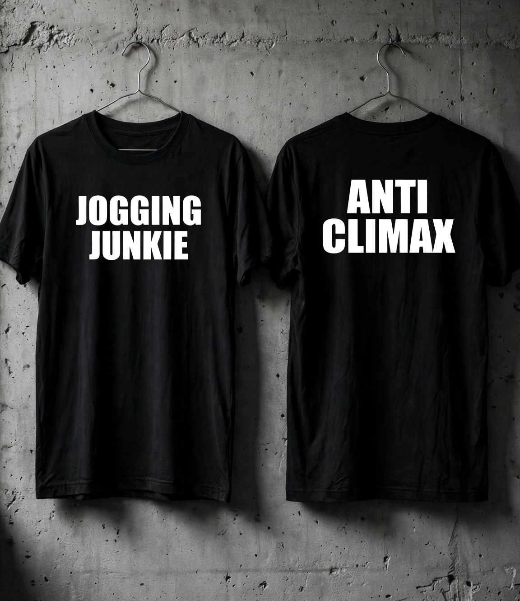
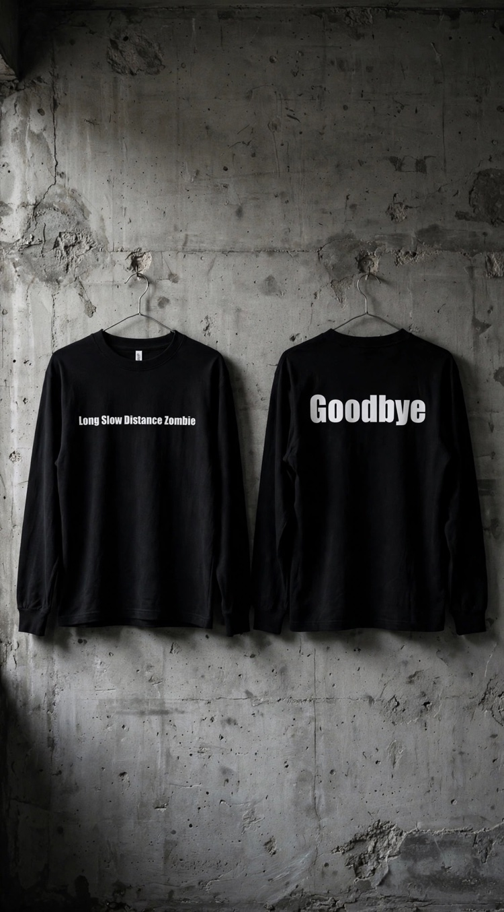
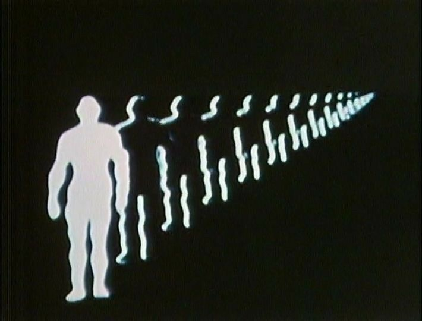

速さは問わない。1kmでも、歩いても、それが苦行になる。Speed is not asked. Even 1km, even walking — that is what becomes the austerity.
PRIMARY FOCUS
DISTANCE > SPEED
MINIMUM
NONE — 1KM COUNTS
このランニングチームでは、金も、特権も、才能もいらない。必要なのは脚と路面だけ。仙台を起点に世界中へ——集まれなくても、同じ夜を走ることでつながる共同体として。 In this running team, no money, no privilege, and no talent are needed. All you need is legs and asphalt. From Sendai to the world — a community bound not by gathering, but by running the same night.
We do not buy our performance.
We pay in sweat, dust, and miles.
“Kugyou Musen”（苦行無銭）rejects the commercialization of endurance sports. Modern athletic culture demands carbon-plated shoes, boutique gym memberships, and hyper-priced synthetic apparel. We believe true resilience is forged in scarcity.
When you strip away the luxury, what remains is the raw human engine. Moving endlessly across the dark asphalt, our discipline requires zero budget. 重力とアスファルトは、すべての人類に平等である。我々が支払うのは、路面に滴り落ちる汗のみだ。 Gravity and asphalt are equal to all of humanity. All we pay is the sweat that drips onto the road.
路面の上では、全員が対等。走るという行為は、原始的で本能的な衝動である。高額なギアも洗練された施設も、走ることの価値を規定しない。On the road, everyone is equal. The act of running is a primal, instinctive urge. Expensive gear and refined facilities do not define the value of running.
金銭に依拠せず挑むことの静かな誇り。無心でアスファルトに立ち向かう。肩書・国籍・年収・ラン歴は、靴箱や玄関に置いていく。The quiet pride of taking on the challenge without relying on money. Facing the asphalt with an empty mind. Title, nationality, income, and running history stay in the shoe cupboard, at the front door.
高額なギアは意志の補強にならない。どんなウェアであろうと、アスファルトの上ではすべてのランナーが平等であり、試されるのは意志のみ。Expensive gear does not reinforce the will. Whatever you wear, on the asphalt every runner is equal, and the only thing tested is the will.
一人で構わない。集団である必要はない。日本の夜道でも世界のどこかでも、基本は「自分 vs アスファルト」。静寂の中にだけ、本当の対話がある。Alone is fine. There is no need to be a group. On a night road in Japan, or anywhere in the world, the basics are the same: you vs. the asphalt. True dialogue exists only within silence.
天候を理由にしない。無銭もやらない理由にはならない。(ただし体調不良は別—中止も切り上げもまた継続の一つの形)Weather is no excuse. Having no money is no reason not to run, either. (Poor physical condition is another matter — stopping, and cutting a run short, are also forms of continuing.)
見知らぬ街、慣れない言語。それでも重力とアスファルトは平等。このチームは異邦人も歓迎する。An unfamiliar city, an unfamiliar language. Even so, gravity and asphalt are equal. This team welcomes strangers, too.
走行距離は買うことができない。ギアの値段はランナーの価値を決めない。誇示ではなく、記録で語れ。Distance cannot be bought. The price of gear does not decide a runner's worth. Speak with records, not with showing off.
他人の「いいね」で満たされるな。Kudosは義務ではない。誰に見られていなくとも、己の定めた美学を裏切らない。Do not let other people's "likes" fill you. Kudos are not an obligation. Even when no one is watching, never betray the aesthetics you have set for yourself.
速さを競う場ではない。過酷な条件のもと淡々と積み上げた距離と、休んで戻ってきた回数こそを称える。競うべきは昨日の己。This is not a place to compete on speed. What we honor is the distance steadily built under harsh conditions, and the number of times you rested and came back. The one to compete with is yesterday's self.
途中で脚が止まった記録も消す必要はない。無傷の栄光より、打ちのめされた葛藤のログにこそ真実が宿る。There is no need to erase a record where your legs stopped midway. Truth lives not in unscarred glory, but in the log of being beaten down and struggling through.
トレーニングにあたり、水・補給・帰宅手段は携える。苦行は自ら選ぶものであり、強要ではありません。歩くことも休息も中止もまた継続の一つの形です。 SUFFERING IS SELF-CHOSEN — NEVER FORCED ON OTHERS. ANY DISTANCE COUNTS. WALKING COUNTS. RESTING IS NOT QUITTING.

One straight line. Nothing else needed.
曲がりくねった言い訳はいらない。黒い地面、白い手すり、抜けた空——三つに区切られた冬の道を、ただまっすぐ進む。セッションの舞台はいつもこういう場所だ。誰の街にもある、何の変哲もない一本道。 No winding excuses are needed. Black ground, a white railing, an open sky — a winter road divided into three, and you simply go straight. The stage for our sessions is always a place like this: an unremarkable straight road that exists in everyone's city.
速さは問わない。1kmでも、歩いても、それが苦行になる。Speed is not asked. Even 1km, even walking — that is what becomes the austerity.
世界各地のメンバーが、それぞれの街で、同じ時刻・同じ条件で走る同期型セッション。 Synchronized sessions in which members around the world run in their own cities, at the same time, under the same conditions.
全セッション共通の鉄則：無銭は無謀を意味しない。——自分の体力と相談し、水・補給・帰宅手段を必ず携える。体調不良や悪天候で中止するのも継続の一つの形。 One rule for all sessions: no money does not mean reckless. Consult your own physical condition, and always carry water, fuel, and a way home. Cancelling for poor condition or bad weather is also a form of continuing.
セッションの内容と日時は以下のとおり。詳細はSNSでアナウンスします。The sessions and their schedules are as follows. Details are announced on social media.
静まり返った都市を駆け抜ける定例ソロラン。昼間とは違う表情の街を切り開く。A regular solo run through the hushed city. Cutting through streets that show a different face from the daytime.
同じ時刻、それぞれの街のアスファルトへ。孤独でありながら世界と同期する1時間。Same time, onto the asphalt of your own city. One hour of solitude, synchronized with the world.
ここに並ぶのは、実際に作られたチームウェアの記録である。チームウェアもまた活動のアーカイブである。 What is lined up here is a record of team wear that was actually made. Team wear, too, is an archive of the activity.



寒い季節の苦行用に用意された、黒の長袖版。前面に「Long Slow Distance Zombie」、背面はただ一言「Goodbye」——置いていくのは、置いていかれる側への挨拶か。 The black long-sleeve edition, made for the cold season's training. "Long Slow Distance Zombie" on the front; on the back, a single word — "Goodbye" — a farewell, perhaps, to those left behind.
2:49/km — the sound of the night shift.
チームミュージック「2:49/km」。長さ2分49秒、170BPMのミニマルテクノ。 メロディは遠くに薄く鳴り、錆びた工具の音が連なって響き合う。夜のアスファルトと、使い古したゴムのための音だ。 下のプレイリストは、そのまま夜道へ出るための選曲。Spotifyにログインしていれば全曲再生でき、ログインなしでも試聴できる。
入会について:苦行無銭は、チームの理念、コンセプトに賛同する方の参加を随時募集しています。参加に、会費も審査も最低距離もありません。本部は Strava クラブ「苦行無銭 — No Money Running Club」（Running Only / Public）。思想と物語はこのサイトに、記録と連帯は Strava に。 About joining: Kugyou Musen welcomes, at any time, those who share the team's philosophy and concept. There is no fee, no screening, and no minimum distance. Headquarters is the Strava club "Kugyou Musen — No Money Running Club" (Running Only / Public). The ideas and the stories live on this site; the records and the solidarity live on Strava.
故郷から遠く離れても、アスファルトに対しては嘘をつかない。異国の地で走る者の、静かな誓い。
財布は空っぽでも、走行距離では富豪だ。
道路の上では母国語はいらない。共通言語は、アスファルトを蹴る足音である。
An anti-elitist, minimalist athletic collective. Fueled by endurance, grit, and brutal austerity. No expensive gyms. No luxury gear. Just asphalt and relentless distance.
月刊WEBマガジン「"FREE" PAPER」のバックナンバー。表紙を押すと、その号をPDFで読める。Back issues of the monthly web magazine "FREE" PAPER. Tap a cover to read that issue as a PDF.
本サイトおよび『"FREE" PAPER』の日付は、創刊を2025年11月に置く編集上の紀年による。記録の内容は、各号・各記事の制作時点のものである。Dates on this site and in "FREE" PAPER follow an editorial calendar that places the founding in November 2025. Each record reflects the time of its making.
英雄のポーズではない。転倒し地面に落下する人のシルエット。それが苦行無銭の原点を表すものである。 Not a hero's pose. The silhouette of a person tripping and falling to the ground. That is what represents the origin of Kugyou Musen.

One runner.
Infinite afterimages.
手前に立つのは、たった一人。だがその背後では、残像が分身のように連なり、三角形を描いて無限遠へ消えていく。一人で走り始めたはずの夜道に、いつの間にか無数の「走り続ける者たち」が重なっている。 In the foreground stands a single figure. Behind them, afterimages line up like doubles, drawing a triangle and vanishing into infinity. On a night road where you set out running alone, countless "ones who keep running" are layered in before you know it.
速くも、派手でもない。ただ止まらずに進み続ける身体が、映像のノイズの中で増殖していく。 Not fast, not flashy. Just a body that keeps moving without stopping, multiplying within the noise of the image.
ランニング中の音楽をお探しであれば、チームのプレイリストをここに置いておきます。聴くかどうかは、走る人の自由です。If you are looking for music to run to, the team's playlist is here. Whether you listen or not is entirely up to you.
掲載している楽曲は、ランニング時のリズムや純粋な音楽的好みによって選曲したものです。曲名や歌詞に含まれる表現・メッセージは当クラブの思想や主張を反映するものではなく、特定の個人・団体への批判や賛同の意図はありません。The tracks featured here were selected purely for their rhythm while running and for personal musical taste. The expressions and messages contained in song titles and lyrics do not reflect the ideas or positions of this club, and are not intended as criticism of, or endorsement of, any specific individual or organization.